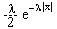

Verovatnoca i statistika
jun '92.
.
1. U kutiji se nalaze cetiri kuglice numerisane brojevima 1, 2, 3, 4. Iz kutije se slucajno biraju dve kuglice, jedna po jedna sa vracanjem. Neka je X kolicnik prvog i drugog izabranog broja.
a) Odrediti raspodelu verovatnoca slucajne velicine X.
b) Izracunati verovatnocu dogadjaja da slucajna velicina X uzme celobrojnu vrednost.
c) Izracunati matematicko ocekivanje slucajne velicine X.
2. Slucajne velicine X Î [0,
2] i Y Î
[0,
2] i Y Î (1)
su nezavisne. Odrediti gustinu raspodele slucajne velicine
(1)
su nezavisne. Odrediti gustinu raspodele slucajne velicine
Z = Y - X i izracunati njeno matematicko ocekivanje.
3. Dat je niz nezavisnih slucajnih velicina koje imaju eksponencijalnu
raspodelu sa parametrom l. Neka je Yn
= . Ispitati konvergenciju
u verovatnoci, skoro sigurnu i srednje kvadratnu konvergenciju niza slucajnih
velicina (Yn).
. Ispitati konvergenciju
u verovatnoci, skoro sigurnu i srednje kvadratnu konvergenciju niza slucajnih
velicina (Yn).
4. U 1000 novcica dobijeno je 525 pisama. Odrediti 99%-ni interval poverenja za nepoznatu verovatnocu padanja pisma.
5. Obelezje X ima gustinu raspodele j(x) = , x Î R, l > 0. Na osnovu uzorka (X1, X2, ..., Xn) odrediti ocenu maksimalne verodostojnosti nepoznatog parametra l i ispitati postojanost dobijene ocene.
6. Verovatnoca dobijanja pisma kod bacanja novcica jednaka p. Testira se hipoteza H0(p = ½), protiv alternative H1 (p ¹ ½) na sledeci nacin: Novcic se baca 5 puta i hipoteza H0 se odbacuje ako u svih 5 bacanja padne ista strana. Odrediti funkciju moci testa, tj. verovatnocu dogadjaja da ce nulta hipoteza biti odbacena.